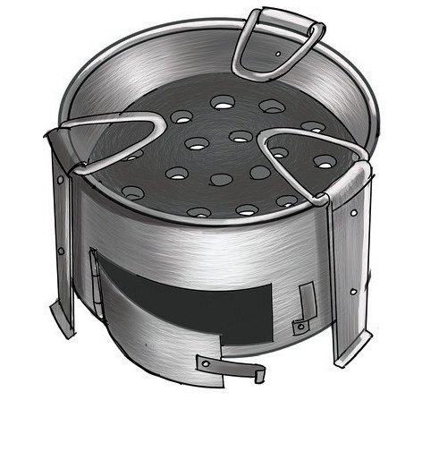
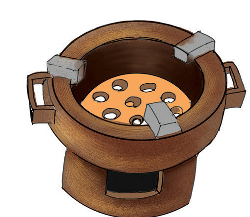

Kielelezo namba 4 kinaonesha aina za majiko ya mkaa.

(a) Jiko la bati

(b) Jiko la udongo wa mfinyanzi
Kielelezo namba 4: Majiko ya mkaa
Kutumia jiko la mkaa
Unapotumia jiko la mkaa, hakikisha mkaa haujazidi mafiga. Weka jiko sehemu ya wazi kwenye mzunguko wa hewa safi ya kutosha. Pia, usitumie jiko la mkaa kwenye chumba kilichofungwa madirisha na mlango. Mkaa ukiwaka hutoa gesi ya kabonimonoksaidi. Gesi hiyo ikiingia mwilini hutengeneza sumu ambayo husababisha kifo.
Wakati wa kutumia jiko unashauriwa kuacha wazi mlango wa jiko. Kama hakuna uhitaji wa kutumia moto mkali funga mlango wa jiko.
Kutunza jiko la mkaa
Chunguza Kielelezo namba 5, kisha fanya Kazi namba 2.
Kielelezo namba 5: Mtoto akitoa majivu kwenye jiko la mkaa